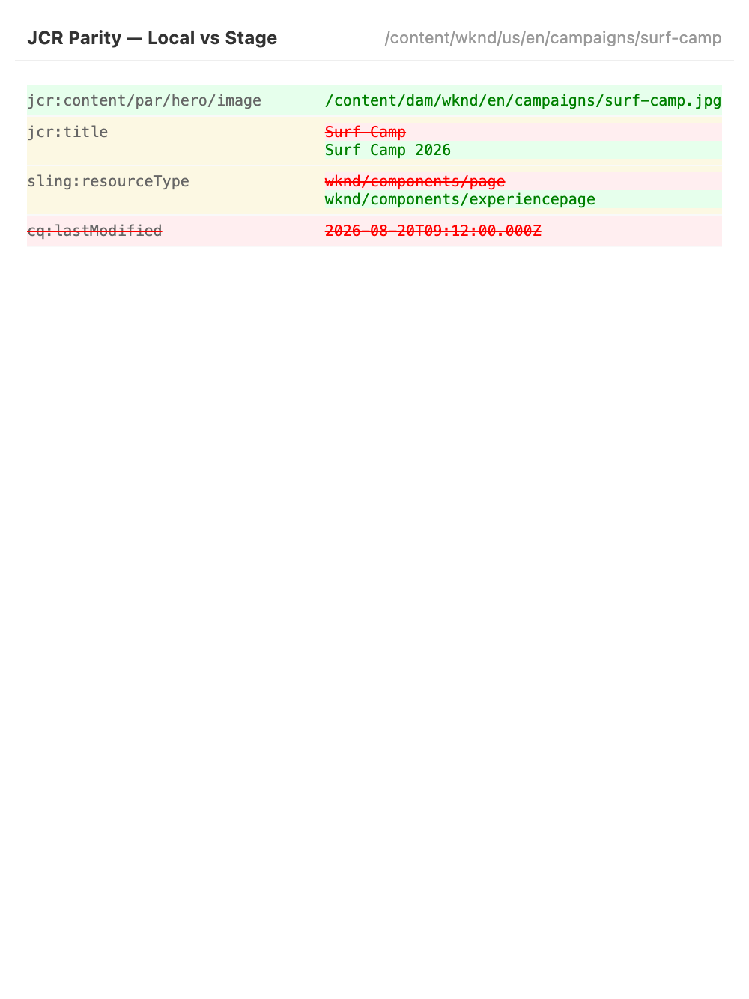
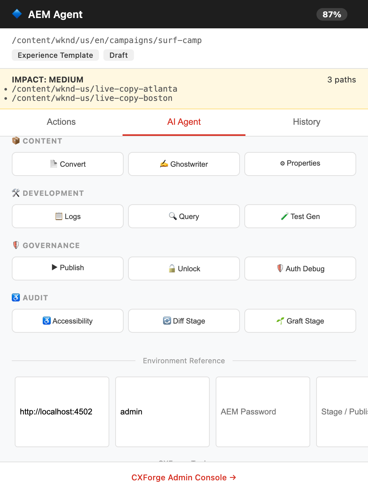

Synthetic walkthrough · recreates the real extension UI · narrator + captions · 1:06
What it does
Ten capabilities, all wired to real AEM APIs — and nothing runs unless you explicitly trigger it.
Governance Audit
Auto-runs on every author page. Checks alt text (ADA), component nesting depth, and SEO metadata, then shows a live health score in the header.
0–100% scoreLog Whisperer
Live Sling error logs filtered to high-signal entries. With Gemini Nano, correlates errors to components automatically.
AI correlationJCR Environment Diff
Recursive diff of {page}.infinity.json against your stage URL — added, removed, and changed properties highlighted.
Content Grafting
After diffing, graft the page JCR content to the target environment via Sling POST — confirmation gated, credentials optional.
confirmation-gatedContent Fragment Creation
Creates CFs via the AEM Assets HTTP API, discovering real models from /conf/{site}/settings/dam/cfm/models.
Ghostwriter (AI SEO)
Reads the live DOM, suggests SEO title + meta description, and writes to jcr:content — rule-based fallback without Nano.
Page Actions
Publish (/bin/replicate.json), Unlock (cq:locked removal), and Permissions Debug with ACL inheritance trace.
Test Generator
Scans the live DOM for data-sling-resource-type components and emits a ready-to-run Playwright test.
Accessibility Audit
Parses the live DOM for ADA/SEO issues and scores them in the panel header; generates a remediation plan when AI is available.
ADA + SEOMSM Blast Radius
Shows how many Live Copy pages a blueprint change affects, with a low / medium / high severity badge.
severity badgeWebMCP Registration
Registers read-only execute_aem_api and get_page_dom tools so SLICC and WebMCP assistants can inspect AEM safely.
AI Chat
Ask for a content fragment, an audit, or a fix list. Falls back gracefully to tools-only mode when Gemini Nano isn't present.
honest fallbackIn the side panel
Real extension UI captured headlessly — sample data was enriched only for presentation.





Live AEM capture (docs/screenshot.png) also ships in the repo — this page embeds a synthetic, clearly-labeled clip because a live AEM instance isn't running in this environment.
Security posture
Audited against OWASP and Snyk guidelines before store submission.
CSRF tokens everywhere
Every mutating request carries a CSRF token from the AEM session.
Host allowlist
Stage/target URLs are validated before any credential is transmitted.
BSRF-safe API bridge
execute_aem_api restricted to relative JCR paths.
Isolated worlds & CSP
MAIN-world bridge vs ISOLATED content script; strict script-src 'self' CSP.